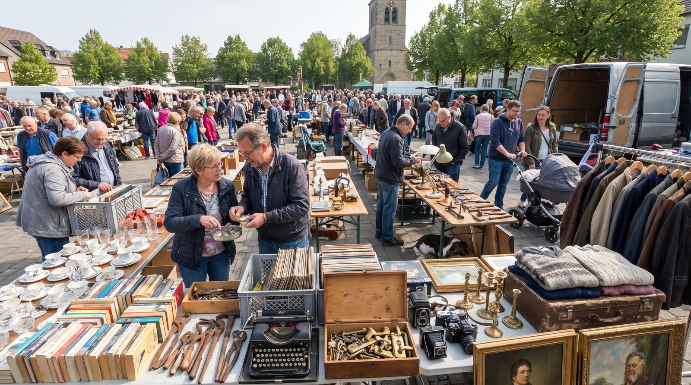

deutschoderwas · Sprachspielclub · 5. September 2026 · ab B1
Auf dem Flohmarkt
Heute stehen wir früh auf, stöbern zwischen Klapptischen und Kartons und lernen, wie man freundlich um einen Preis feilscht. Zum Schluss wartet das große Quiz mit zehn Runden auf Sie.
Beschreiben Sie genau, nicht ungefähr. Nicht: Da liegen viele alte Sachen. Sondern: Auf dem linken Klapptisch stehen drei Tassen ohne Henkel neben einer blauen Kaffeekanne.

💡 Erste Runde: Jede Person sucht sich eine Ecke des Bildes aus und erzählt eine Minute lang, was dort passiert. Die anderen dürfen danach genau zwei Fragen dazu stellen. Wer nichts mehr findet, gibt weiter.
Findet diese Sachen
Tippt ein Wort an, wenn ihr es gefunden und die Lage beschrieben habt: So soll eine Lagebeschreibung klingen: „Rechts neben der Geldkassette liegt ein Karton mit Büchern, und darüber hängt ein Sonnenschirm.“
0 von 28 gefunden
Die Wörter dazu
Sagt jedes Wort laut — und gleich den ganzen Beispielsatz dazu. Der Artikel gehört immer mit dazu.
💡 Spiel dazu: Verdeckt die Wörter. Eine Person beschreibt eine Karte in drei Sätzen, ohne das Wort zu nennen — die anderen raten. Tippt auf eine Karte, um sie einzeln aufzudecken.
🎁 „Ich sehe etwas, das …“
Eine Person zieht ein geheimes Wort aus dem Bild und beschreibt nur mit Präpositionen, wo es ist — die anderen raten, was es ist!
🤫 Dein geheimes Wort
Bereit?
Beschreibe seine Lage — aber sag das Wort nicht!
🗣️ So beschreibst du: „Es befindet sich …“ · „Es liegt / steht / hängt …“ + Präposition + Dativ.
🏆 Spielregeln: Nenne mindestens zwei Präpositionen, bevor die anderen raten dürfen. Wer richtig rät, bekommt einen Punkt und ist als Nächstes dran.
📍 Neun Präpositionen, zwei Fragen. Wo? fragt nach der Lage — dann kommt der Dativ. Wohin? fragt nach der Richtung — dann kommt der Akkusativ. Dieselbe Präposition, zwei Fälle.
Wo? → Dativ
Die Sache ist schon da und bewegt sich nicht. Bildet zu jeder Präposition einen eigenen Satz zum Bild.
in
„Die alten Postkarten liegen in einem Karton neben der Geldkassette.“
an
„Ein handgeschriebenes Preisschild klebt an der Kaffeekanne.“
auf
„Auf dem Klapptisch stehen drei Tassen ohne Henkel.“
unter
„Unter dem Tisch stehen die Kartons mit den Ersatzteilen.“
über
„Über dem Stand hängt ein großer Sonnenschirm gegen die Morgensonne.“
neben
„Neben der Kiste mit Schallplatten steht ein voller Bollerwagen.“
vor
„Vor dem Stand bleibt eine Sammlerin stehen und stöbert in den Zeitschriften.“
hinter
„Hinter dem Klapptisch sitzt der Verkäufer auf einem Campingstuhl.“
zwischen
„Zwischen den Ständen ist der Gang so eng, dass man kaum aneinander vorbeikommt.“
🧠 Dativ-Artikel: der → dem · das → dem · die → der · Plural → den (+n).
Wohin? → Akkusativ
Etwas bewegt sich irgendwohin. Achtet auf das Verb: gehen, legen, stellen, werfen — das sind die Verräter.
in + Akk.
„Der Verkäufer legt das Kleingeld in die Geldkassette.“
auf + Akk.
„Ich stelle die Vase vorsichtig auf den Klapptisch.“
an + Akk.
„Sie klebt ein neues Preisschild an den Bilderrahmen.“
unter + Akk.
„Er schiebt die leeren Kartons unter den Tisch.“
über + Akk.
„Wir spannen eine Plane über den Stand, weil es zu regnen beginnt.“
hinter + Akk.
„Stell den Bollerwagen bitte hinter den Stand, damit niemand stolpert.“
🧠 Akkusativ-Artikel: der → den · das → das · die → die · Plural → die. Merksatz: Wo? = Dativ (es ist schon da) · Wohin? = Akkusativ (es bewegt sich dorthin).
🎲 Spiel dazu: Eine Person sagt einen Satz mit Wo?, die nächste macht daraus einen Satz mit Wohin?. Wer den Fall verwechselt, gibt weiter.
🔤 Tabu
Erkläre das Wort oben — aber ohne die verbotenen Wörter zu benutzen! Die anderen raten. Tipp: Fang mit „Das ist ein Ort, an dem …“ oder „Das braucht man, wenn …“ an.
⏱️ Spielidee: 60 Sekunden pro Runde. Für jedes erratene Wort gibt es einen Punkt. Benutzt jemand ein verbotenes Wort, ist die Karte futsch. Zwei Teams treten gegeneinander an!
🗣️ Frei sprechen
Sprecht frei — nutzt den Wortschatz aus dem Bild.
Erinnerung
Was war das letzte gebrauchte Ding, das Sie gekauft haben? Wo war das, was hat es gekostet, und benutzen Sie es heute noch?
Beschreiben
Beschreiben Sie einen Gegenstand bei Ihnen zu Hause, den Sie niemals auf einem Flohmarkt verkaufen würden — aber nennen Sie seinen Namen nicht. Die anderen raten.
Vergleich
Flohmarkt oder Onlineportal für Gebrauchtes: Wo kaufen Sie lieber? Vergleichen Sie Preis, Auswahl, Risiko und Erlebnis.
Regeln
Welche ungeschriebenen Regeln gelten beim Handeln? Wann ist Feilschen unhöflich, und wie sagt man höflich Nein zu einem Angebot?
Kultur
Gibt es in Ihrem Herkunftsland Märkte für gebrauchte Sachen? Wann finden sie statt, und wird dort auch gehandelt?
Geschichte
Erfinden Sie in fünf Sätzen die Geschichte eines alten Koffers: Wem gehörte er, wohin ist er gereist, und warum liegt er heute auf diesem Stand?
Diskussion
Sollten Eltern ihren Kindern beibringen, um Preise zu handeln? Was lernen Kinder dabei, und wo liegt die Grenze?
Streit
Ein Verkäufer verlangt vierzig Euro für eine Kaffeekanne und nennt sie eine Antiquität. Sie halten das für stark übertrieben. Was sagen Sie, ohne unhöflich zu werden?
🔑 Redemittel fürs Bild: „Ganz vorne / hinten sieht man …“ · „Direkt daneben …“ · „Mitten im Bild / in der Ecke …“ · „Links / rechts von … befindet sich …“ · „Im Vordergrund / im Hintergrund …“
⚖️ Kleine Debatte
Gebraucht kaufen statt neu: vernünftige Entscheidung oder unnötiger Verzicht?
♻️ Gebraucht ist die bessere Wahl
Jedes gebrauchte Stück, das weiterlebt, spart Rohstoffe und Energie für ein neues.
Für wenig Geld bekommt man oft bessere Qualität als neu in derselben Preisklasse.
Auf dem Flohmarkt entdeckt man Dinge, die es im Laden gar nicht mehr gibt.
Das Geld bleibt bei Privatleuten in der Nachbarschaft statt bei großen Ketten.
🛍️ Neu hat gute Gründe
Bei Privatkäufen gibt es keine Gewährleistung und kein Umtauschrecht.
Man verliert viel Zeit mit Suchen und findet trotzdem selten genau das Passende.
Bei Elektrogeräten und Kindersitzen kann Gebrauchtes ein echtes Sicherheitsrisiko sein.
Wer Reparatur und fehlende Ersatzteile einrechnet, zahlt am Ende oft mehr als für Neuware.
So sagst du deine Meinung
Ich finde, …Für mich ist …Das mag sein, aber …Da bin ich anderer Meinung, weil …Genau das ist doch das Problem: …
🎲 So geht es: Zwei Gruppen. Jede bekommt eine Seite zugelost — auch die, die sie selbst nicht glaubt. Drei Minuten sammeln, dann abwechselnd sprechen, immer ein Satz.
🎬 Rollenspiele
Zieht eine Karte, verteilt die zwei Rollen und spielt die Szene zwei bis drei Minuten. Die Wörter unten dürfen — sollen! — vorkommen.
🗣️ Nach jeder Szene, ein Satz reihum: „Ich hätte an deiner Stelle gesagt: …“ — so hört ihr drei Varianten für dieselbe Situation statt nur einer.
🏆 Das große Quiz
Zehn Runden, sechs Fragen pro Runde: vom Trödel über das Feilschen bis zu den Redewendungen rund ums Geld.
Runde 1 · Frage 10 von 6
🏅 Als Wettkampf: Zwei Teams, abwechselnd. Wer die richtige Antwort hat, muss zusätzlich einen eigenen Satz mit dem Wort bilden — erst dann gibt es den Punkt.